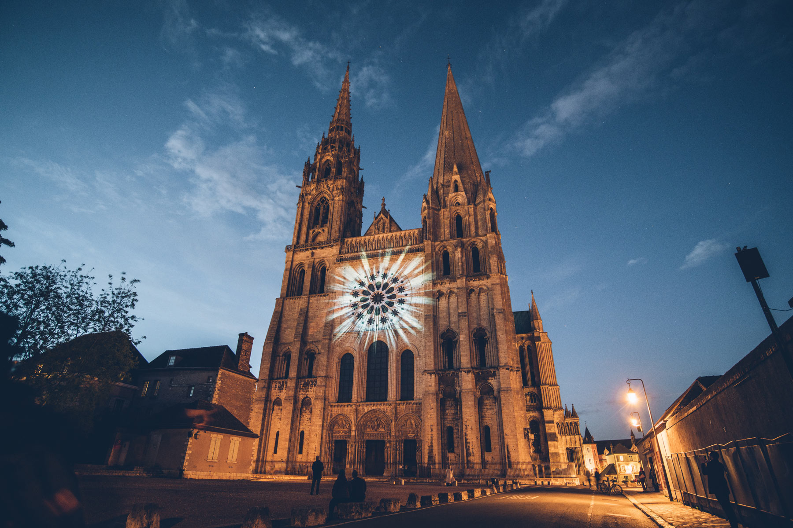

Chartres est située dans le centre-nord de la France, au sud-ouest de Paris.
La ville est connue pour son imposante cathédrale Notre-Dame. Cette dernière, de style gothique, achevée en 1220, arbore 2 immenses flèches, des arcs-boutants, des sculptures romanes, un labyrinthe au sol et des rosaces détaillées.
Plus inattendu, vous vous promenerez dans les rues et ruelles du centre historique et de la basse ville médiévale, où le street art a pris possession des murs pour notre plus grand plaisir. La gastronomie et le bien être ne seront pas en reste. On vous a concocté un week end douceur de vivre & surprenant à Chartres !
23 sites sont illuminés dans le cœur de ville de Chartres, TOUS les soirs, de la tombée de la nuit à une heure du matin (22h30 à partir du 31 octobre 2021).Dont plusieurs nouveautés :
Et des illuminations spécialement créées pour Noël du 3 décembre 2021 au 15 janvier 2022 sur :
Les illuminations sont projetées tous les soirs et tournent en boucle jusqu'au 15 janvier 2022 : de 18h00 à 22h30
La ville est connue pour son imposante cathédrale Notre-Dame. Cette dernière, de style gothique, achevée en 1220, arbore 2 immenses flèches, des arcs-boutants, des sculptures romanes, un labyrinthe au sol et des rosaces détaillées.
